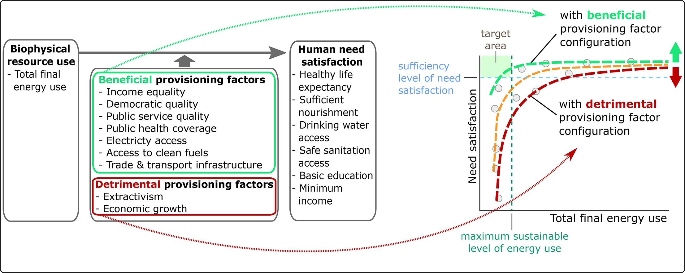
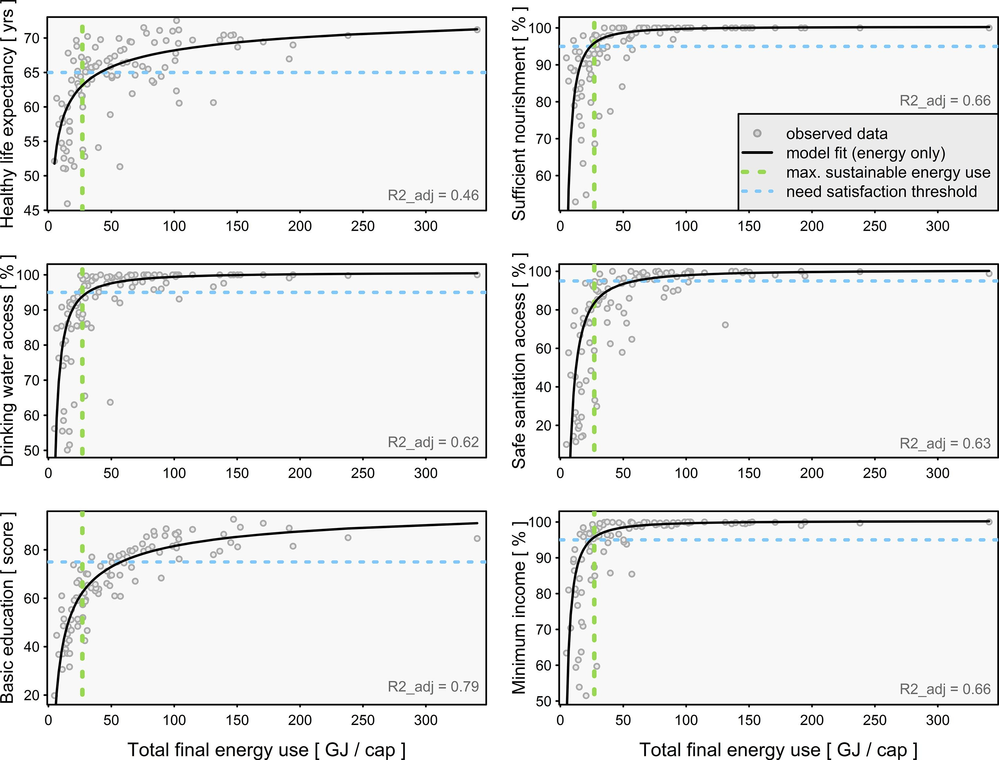

44 Development Economics
Trainer
Thinking about development is dominated by a conventional conception which takes for granted the centrality of increasing production for sale, integration into the globalized market place, moving to more sophisticated technologies, and the goal of rising to affluent rich-world living standards. Basic criticisms of this conception of development are briefly summarized, firstly to do with the way it has primarily benefitted the rich and secondly regarding its grossly unsustainable resource implications. Global biophysical resource endowments prohibit its realization. There has been remarkably little thinking from conventional or critical sources on the goals and means which a sustainable alternative must take. The Simpler Way project is concerned to show the necessity for, and desirability and workability of, the development of mostly small scale, cooperative, highly self-sufficient and self- governing local economies focused on meeting basic needs, and not concerned with economic growth, globalization, competing in the global market place, or aspiring to rich-world “living standards”. It is argued that only some form of Simpler Way can enable satisfactory global development within sustainable resource and ecological limits.
The major fault in most if not all previous development thinking has been failure to grasp the need for materially simple lifestyles and systems.
Conventional development can be regarded as a form of legitimized plunder.
Alternative, appropriate development … The simpler way
The basic element in appropriate development is the small, highly self-sufficient and largely co-operative local economy.
The transition can be a process of gradually building a new “Needs-Driven-Economy” underneath the old “Profit-Driven-Economy”. It can begin by a few coming together as a Community Development Cooperative to organize the provision of some neglected basic goods and services, for example by setting up community gardens, poultry co-ops or aged care rosters. Their long term goal would be to increase these cooperative, socially desirable non-market activities until they might largely replace the old economy.
Trainer (2021) Third World Development RWER 95 (pdf)
44.1 Structural Reforms
Braun on Draghi’s ‘Refrorm Thesis’
Draghi was a structural reformer avant la lettre: He uses the term “reform” exactly as it would come to be used in “structural reforms”. Except that the concept didn’t exist at the time.
Draghi’s thesis fully articulates the theory that came to bring us structural reforms: A planner opting for short-run stimulus will never reach the optimal long-run path. By contrast, enforcing optimum long-run policies today will not have negative short-run consequences.
Noting that “the common finding is a positive relationship between real wages and employment”, Draghi seeks to refute that finding, describing it an artifact of faulty methodological choices.
Structural reformers must reject the idea of a positive wage-employment relationship because SRs are supposed to boost employment precisely via lower real wages.
Braun - Twitter Thread on Mario Draghi’s Thesis
Tooze on Draghi/Yellen new assignments
It would be absurd to blame either Draghi or Yellen personally for the sequence of shifts and shocks that has destabilized capitalist democracies since the 1990s or the crisis of confidence these have triggered among centrist liberals. But as people of huge influence and as representatives of a class of experts who have ruled the roost for the last 30 years, they can hardly plead innocence either. It was on their watch that growth slowed, inequality between social classes and regions became ever deeper, and the risk of inflation tipped into that of deflation. It was on their watch that the financial system was allowed to become a flywheel of mass destruction. It was on their watch that the risks of climate change and pandemic threats went unaddressed.
If broad-based growth cannot be restarted, the implications are alarming.
Whereas the market revolutionaries of the 1970s and ’80s were radicals, squashing the last bastions of the old left and bulldozing organized labor out of the way, Draghi and Yellen came to the fore in the 1990s as managers of what is now known as the Great Moderation.
Inheritors of the market revolution, committed to managing and improving the status quo, Draghi’s and Yellen’s march through the institutions has been glorious, but their careers have also been defined by constant adjustment to political and economic shocks that they did not foresee and could not control. These shocks have driven Yellen and Draghi to explore the political and economic boundaries of technocratic power.
At MIT and Yale in the 1970s, they imbibed what was known as the neoclassical synthesis. The central idea was that though the microeconomics of markets were important, markets would function properly only so long as the macroeconomic environment was set correctly. Keynesianism and market economics were not opposites but complements.
In the 1980s, Yellen played an important part in shaping the further development of the neoclassical synthesis known as New Keynesian economics. Working alongside the likes of Joseph Stiglitz and George Akerlof, she mapped how labor market imperfections could give rise to macroeconomic problems. Those rigidities in wages and prices, in turn, also enabled macroeconomic policy to work. It was because markets were slow to adjust that unexpected movements in interest rates, taxes, and government spending could have real effects.
Draghi’s work at MIT was less intellectually generative than Yellen’s. But his dissertation is nevertheless revealing. It includes a chapter in which he describes how planners trying to manage an economy subject to short-run fluctuation are more successful if they focus on long-run goals. Long-range strategy, regardless of short-term cost, will do better than a hectic effort to optimize at every moment.
Though they owe little to the Chicago school, it does not follow that Draghi and Yellen were not exponents of neoliberalism. On the contrary: They were strong advocates of markets. Competition and properly designed incentives were the recipe for productivity and growth.
In the world economy, they favored the free capital movement and flexible exchange rates that defined the so-called Washington Consensus of the 1990s. It was Rudiger Dornbusch, the pope of international macroeconomics at MIT and one of Draghi’s chief mentors, who described the project of his generation as being the taming of “democratic money.” In the wake of the collapse of the Bretton Woods financial order and the U.S. dollar’s gold peg, the chief enemies of good economic governance were shortsighted trade unions pushing for higher wages and vote-chasing politicians. Once trade unions were curbed and politicians confined to their proper tasks, Friedmanite monetarists hoped that prices could be stabilized by mechanical monetary rules.
But by the early 1980s, that had proved naive. For the MIT crowd, what keeping money safe from democracy amounted to was placing it under the control of competent experts credibly committed to providing markets with the stable framework they needed. The independent central bank was their institutional bastion.
The global financial order developed by economic elites—from the 19th-century gold standard to the gold-pegged dollar of the Bretton Woods system to the worldwide preoccupation with independent central banks after Bretton Woods dissolved—has always involved imposing constraints on policymakers. In the 1980s, devices such as exchange rate pegs were all the rage in Asia as well as Europe for signaling self-discipline to financial markets.
For all their inside status and expertise, neither Yellen nor Draghi gave any public sign of anticipating the crisis that was to come. The same was true for the vast majority of their cohort, whether MIT or Chicago. The scale of the systemic risk posed by the financial system of the advanced economies simply did not register until it was too late.
The consistent failure to deliver adequate fiscal policy responses to the crisis after 2008 went against all the preconceptions of 1970s MIT-style macroeconomics.
Where were the spendthrift politicians when you needed them? The fiscal undershoot by the Obama administration could perhaps be explained by miscalculation and Republican partisanship. But the fact that a centrist majority in the heart of Europe, faced with dangerous populist challenges from the left and right, would choose to die on the hill of budget balance was not part of the plan.
It was up to the ECB to act. In 2015, to the horror of German conservatives, Draghi finally launched a QE program. This was a technical economic measure. But it had spectacular political effects. It enabled the European Council to play hardball with the radical left-wing government in Greece without causing the bond markets to panic. One might say it marked the Americanization of the ECB.
Seven years on from the collapse of Lehman Brothers, a majority on the Fed board was swinging toward tightening. The point was not so much that the U.S. economy needed restraining as that they were deeply uncomfortable with interest rates remaining at zero. It stoked speculation in financial markets and gave the Fed nowhere to go if it needed to counter a downturn. Negative interest rates along the lines adopted by Japan were not something that the Fed wanted to contemplate.
The basic framework of 1970s macroeconomics that framed Draghi and Yellen’s training and outlook, like that of the rest of their cohort, was that properly structured markets would take care of growth. Well-regulated financial systems were stable. The chief priority for economists was to educate and restrain politicians to ensure that inflation remained in check and public debts were sustainable.
Financial instability is a mortal risk. For now, it is being held at bay. But the world saw as recently as March 2020 how rapidly even the largest financial market—the market for U.S. Treasurys—can be destabilized. To tame that risk, the Fed and the ECB, under Yellen’s and Draghi’s non-economist successors—Jerome Powell and Christine Lagarde, respectively—have adopted an astonishingly undogmatic and expansive approach to stabilization.
The Italian political class is abdicating in favor of a retired, unelected official in his 70s.
Faced with a decisive historical challenge—restarting growth after decades of stagnation—Italy’s political class has chosen to delegate executive power to someone who has never been elected to office. It is the ultimate victory of technocracy but also a do-or-die challenge.
The truly strategic challenge facing progressive politics in the United States as in Europe is to find a new model of inclusive and environmentally sustainable economic growth
In the 1990s, you didn’t need to be a naive exponent of the post-Cold War end-of-history argument to think that the direction of travel for global politics was clear. The future belonged to globalization and more-or-less regulated markets. The pace was set by the United States. That enabled technocratic governments to be organized around a division between immediate action and long-term payoff. That was the trade-off that Draghi evaluated in his MIT Ph.D. in the 1970s. The drama of Draghi and Yellen’s final act is that for both of them, and not just for personal reasons, the trade-off is no longer so clear-cut. If the short-term politics fail, the long-term game may not be winnable at all. “Whatever it takes” has never meant more than it does today.
Tooze (2021) Draghi/Yellen - Can they control what comes next?
44.2 TechFare
Bhagat
Big Tech has long thrived on regulatory evasion and the exploitation of legal grey areas.
In this literature, then, the tendency is to assume that it is an absence of state intervention that has underpinned the technology industry’s growing economic (and political) power. With our conception of techfare, however, we aim to push beyond these explorations of how Big Tech evades state control. Instead of focusing on state absences, we set out to highlight an equally significant dynamic: how the technology industry has become deeply entwined with the activities of the neoliberal state.
As is well known, neoliberalism has yielded specific forms of state intervention to discipline and normalize the surplus population and to regulate social insecurity. Filling the void left by the retrenchment of social and welfare spending, these forms include Jamie Peck’s workfare, Susanne Soederberg’s debtfare, and Loïc Wacquant’s prisonfare. As the technology industry has inserted itself more deeply into consumer credit markets and surveillance activities, it has augmented both debtfare (which normalizes and encourages reliance on private sources of credit to augment wages and regulate social insecurity) and prisonfare (which criminalizes poverty through policies that extend the reach of the police, courts, jails, and prisons). And, as the two vignettes below show, it has done so in ways that not only support the ongoing efforts of the neoliberal state, but that also underpin the growth and profitability of Big Tech itself.
The penetration of Big Tech into the realm of consumer finance has clear parallels with what Gabor and Brooks (2017) call the fintech-philanthropy-development nexus. Gabor and Brooks argue that fintech has accelerated the financial inclusion of the poor and enhanced financial institutions’ ability ‘to bank the unbanked. Big Tech, too, is adopting these logics of financial inclusion: the technology giants have vast stores of user data and trusting consumer bases that have allowed them to extend financial services globally. For instance, the total alternative credit model—a combination of fintech and lending by Big Tech companies—reached $800 billion in 2019. In Asia, Africa, and Latin America the presence of Big Tech credit grew rapidly, coinciding with the decline of fintech credit volumes due to market regulation in China.
Our snapshots surrounding consumer finance and surveillance act as central examples of arenas where techfare augments extant modes of neoliberal regulation in the face of social insecurity. In aligning with debtfare, we are interested in how the vacuum left by welfare retrenchment and the decline of traditional financial actors has paved the way for Big Tech to become a player in consumer finance through new innovations on payday loans, credit cards, and other lending services that explicitly target low-income earners. In relation to prisonfare, we also highlight how Big Tech profits off of surveillance by extending the carceral state to the level of the neighbourhood and the household. Facial recognition is often seen as a public safety tool. But its potential to erode privacy and criminalize vast numbers of people while generating both revenue and data for Big Tech is an important direction for future research.
Bhagat (2021) The Techfare State: The ‘New’ Face of Neoliberal State Regulation
44.3 How Asia Works
Smith on Studwell
I like How Asia Works because it tells a coherent story about how countries get rich. Basically, Studwell says it’s a three-step process:
Land reform: Forcibly buy up tenant farms from landlords and give it to the tenants; this increases farm productivity per unit of land area, gives rural people more to do, provides small farmers with some startup capital should they choose to sell their farms and move to town, and pushes landlords themselves to move to cities and use their talents to start more productive businesses.
Export discipline: Push companies to export instead of just selling domestically. Cut off support to companies that try to export and fail. This will push companies to increase productivity in order to compete in world markets, especially by learning foreign technology.
Financial control: Push banks to support exporters instead of putting their money into real estate bubbles and the like.
It’s very difficult to test whether this model really works, or whether the successful development of countries like South Korea and Taiwan was due to something else. We can look at evidence for pieces of the theory — for example, the idea that small farms tend to be more productive than medium-sized ones seems fairly well-supported in the data, and there’s also some evidence that pushing companies to export does cause them to raise their productivity.
But Studwell’s model is so complex that it’s hard to test all the pieces together. And if you need all the pieces in place — for example, if export promotion doesn’t work without the “discipline” of winding up failing firms, or if land reform fails if you don’t allow farmers to sell their land, or if export discipline itself doesn’t work without land reform — then testing the pieces individually won’t give us the answers we want.
Because it’s so hard to test, the theory serves less as a tried-and-true policy prescription and more as a launching point for ideas about how to manage a developing economy
Smith on Krugman, Fujita and Venables’ The Spatial Economy
We might start to wonder if successful development policies simply determine countries’ place in a queue. My longtime readers will also know that in addition to How Asia Works, I love Krugman, Fujita, and Venables’ The Spatial Economy. And in the final section of that (highly technical) book, the authors turn what was a humble theory of urbanization into a grand theory of global development. And the upshot of that grand theory is that countries have to basically wait in line to get rich. There’s just no way for them to all hop on the rapid industrialization train all at once. Better policy can let you cut to the front of the line, but then the countries you cut in front of are out of luck.
This is a highly stylized, pretty speculative theory, which is even harder to prove than Studwell’s. But it kinda-sorta fits the observed pattern in Asia — first Japan and Hong Kong and Singapore grew quickly, then Taiwan and South Korea, then China, now Vietnam and Indonesia. Malaysia and Thailand got a head start on China but then slowed down after the financial crisis of ‘97, while China accelerated — perhaps because China “cut in line” in front of the Southeast Asian tigers. But now, with China slowing down, perhaps Malaysia is back at the front of the line.
Anyway, this would be a depressing, fatalistic sort of world, where development is a zero-sum-game in the short term. Hopefully it’s not true — I’d much rather believe in a Studwellian world where the right smart growth policies can boost lots of countries at once. But we may never know which is right.
Smith on Chang and Studwell
We don’t really know how economic development happens, and to put too much faith in the Chang/Studwell story would be unwise.
Smith (2021) Jamaica is doing OK Could it do better than OK?
44.4 Social Provisioning of Needs
Vogel Abstract
Meeting human needs at sustainable levels of energy use is fundamental for avoiding catastrophic climate change and securing the well-being of all people. In the current political-economic regime, no country does so. Here, we assess which socio-economic conditions might enable societies to satisfy human needs at low energy use, to reconcile human well-being with climate mitigation. Using a novel analytical framework alongside a novel multivariate regression-based moderation approach and data for 106 countries, we analyse how the relationship between energy use and six dimensions of human need satisfaction varies with a wide range of socio-economic factors relevant to the provisioning of goods and services (’provisioning factors’). We find that factors such as public service quality, income equality, democracy, and electricity access are associated with higher need satisfaction and lower energy requirements (‘beneficial provisioning factors’). Conversely, extractivism and economic growth beyond moderate levels of affluence are associated with lower need satisfaction and greater energy requirements (‘detrimental provisioning factors’). Our results suggest that improving beneficial provisioning factors and abandoning detrimental ones could enable countries to provide sufficient need satisfaction at much lower, ecologically sustainable levels of energy use. However, as key pillars of the required changes in provisioning run contrary to the dominant political- economic regime, a broader transformation of the economic system may be required to prioritise, and orga nise provisioning for, the satisfaction of human needs at low energy use.

Vogel Memo
Our analytical framework conceptualises the provisioning of human needs satis faction in an Ends–Means spectrum. Our framework considers energy use as a means, and need satisfaction as an end, with provisioning factors as intermediaries that moderate the relationship between means and ends. We thus operationalise O’Neill et al.’s (2018) framework by reducing the sphere of biophysical resource use to energy use (for analytical focus), and reducing the sphere of human well-being to human need satisfaction (for analytical coherence). Our operation alisation of human need satisfaction follows Doyal and Gough’s (1991) Theory of Human Need, reflecting a eudaimonic understanding of well- being as enabled by the satisfaction of human needs, which can be evaluated based on objective measures.
Only 29 countries (28%) in our sample reach sufficient levels in all need satisfaction dimensions assessed here (health, nutrition, drinking water access, safe sanitation, education, minimum income). Each of these need-satisfying countries uses at least double, many even quadruple, the 27 GJ/cap deemed the maximum level of energy use that could be globally rendered sustainable. Our bivariate regression analysis confirms that while energy use is significantly correlated with need satisfaction, high levels of energy use seem neither necessary nor particularly beneficial for need satisfaction. Whereas at low levels of energy use, need satisfaction steeply increases with energy use, need satisfaction improvements with additional energy use quickly diminish at moderate levels of energy use and virtually vanish at high levels of energy use.
High energy use alone is not sufficient to meet human needs. At low to moderate levels of energy use, there is a large spread in observed need satisfaction outcomes. which cannot be explained by energy use alone.
Need satisfaction outcomes are statistically better explained when a relevant provisioning factor is included as an inter mediary that moderates the relationship between need satisfaction and energy use. Across multiple dimensions of human need, the relationship between need satisfaction and energy use varies significantly and sys tematically with the configuration of certain provisioning factors.
We distinguish three types of provisioning factors. Beneficial provisioning factors are associated with socio- ecologically beneficial performance (higher achievements in, and lower energy requirements of, human need satisfaction). Countries with high values of a beneficial provisioning factor tend to achieve higher levels of need satisfaction at a given level of energy use, and tend to reach a particular level of need satisfaction with lower levels of energy use, compared to countries with median values of the provisioning factor. Detrimental provisioning factors are associated with socio-ecologically detrimental performance (lower achievement in, and greater energy re quirements of, human need satisfaction). Countries with high values of a detrimental provisioning factor tend to exhibit lower need satisfaction at a given level of energy use, and tend to reach a particular level of need satisfaction only at higher levels of energy use, compared to countries with median values of the provisioning factor. Lastly, non-significant provisioning factors do not show significant interactions with the rela tionship between energy use and need satisfaction.

Figure: Most human needs are currently not sufficiently met within sustainable levels of energy use. Cross-country relationships between different need satisfaction variables (y) and total final energy use (x) are shown as black lines, with data shown as grey dots. The green dashed line illustrates the 27 GJ/cap deemed the maximum level of energy use that can globally be rendered sustainable. Thresholds for sufficient need satisfaction are shown by the dotted blue lines. R2_adj is the coefficient of determination, adjusted for the number of predictors.
Vogel (2021) Socio-economic conditions for satisfying human needs at low energy use: An international analysis of social provisioning (pdf)